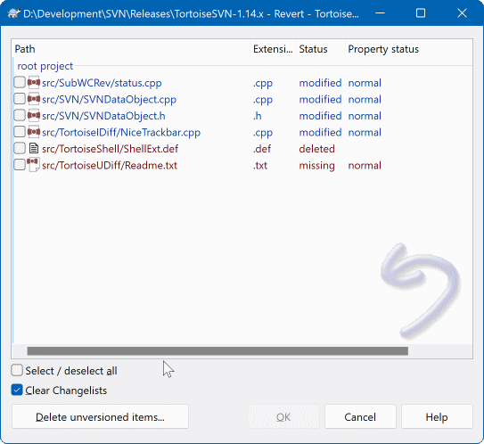

9撤销：改错了怎么退回
「改错了想退回去」听起来简单，但在 SVN 里要先分清退的是哪一种：是撤掉还没提交的本地改动， 还是撤掉已经提交上去的东西。这两件事用的功能完全不同，混着用会出事。
改动只在你电脑上，服务器不知道。
用 TortoiseSVN → Revert...
本地的修改直接丢掉，文件变回服务器上的样子。操作前那次改动就没了。
改动已经在服务器上，同事可能已经拉走了。
用日志里的 Revert changes from this revision
历史不会被抹掉，而是再提交一次来抵消旧改动，相当于把刚才那笔操作倒过来做一遍。
判断方法很简单：打开文件的右键菜单，如果修改还没提交（角标是红色叹号），就用 Revert；如果已经提交过了，就去 Show log 里做反向合并。
情形一：撤销还没提交的本地改动（Revert）
这是最常用的撤销。典型场景：改到一半发现方向错了、把代码改崩了懒得修、 本来只想试一下结果改乱了文件——直接退回服务器上的版本，从头再来。

① 文件列表（主体）——列出所有将被恢复原样的文件。每一行前面有勾选框：勾着 = 这次撤它， 取消勾选 = 这次放过它、保留我的改动。列表里的文件名要一个个看过去，尤其当你右键的是整个文件夹时。
② 全选 / 全不选按钮（Select / deselect all）——一键勾上或清空全部勾选。 文件多的时候先用它清空，再单独勾那两三个要撤的，比一个个点更快也更不容易漏。
③ 勾选项——对话框里还有几个关于「怎么撤」的选项，默认设置就是最彻底、最常用的那种（把文件恢复成服务器上的样子）。不确定这些选项含义时，保持默认，不要乱动。
④ OK / Cancel——OK 就是执行，执行即生效，没有第二步确认；Cancel 则什么都不做，安全退出。
一句话：勾选决定撤哪些，OK 决定撤不撤。点 OK 之前，再扫一遍列表里有没有你还要留着的文件。
Revert 是把文件恢复成服务器上那一版。你本地那些没提交的修改，SVN 里没有任何副本——它本来就没上传过服务器，所以也没有历史可查。
点完 OK，那些改动就是永久消失：回收站里没有，日志里没有，谁也帮你恢复不了。
点 OK 前问自己一句：这几个文件里，有没有我其实想留着的东西？
另外注意一个常见的连锁反应：撤销之后文件回到了旧版本，如果你之前基于新版本内容做了别的调整，那些调整可能就对不上了，需要一起检查。
- 看角标——从红色叹号变回绿色对勾，说明本地已和服务器一致。
- 打开文件看一眼——最直接，也最可靠。
- 右键 →
Check for modifications——列表里这个文件消失了，就说明它确实没有待提交的改动了。
情形二：撤销已经提交上去的改动
提交之后才发现改错了，这时候不能再指望「撤掉」——那次提交已经在服务器上、也已经被别人拉到本地了。 正确的做法叫做反向合并（reverse merge）：让 SVN 把那次提交的改动倒着应用一遍， 再产生一次新的提交来抵消它。
SVN 的版本历史是只增不改的：任何一次提交都会永久留在那里，没有任何图形界面的办法能让它凭空消失。
所以「撤销一次提交」实际上变成了一次新的提交——它的效果正好把之前的改动抵消掉。结果是：文件内容回到了你想要的样子，历史里看得见「谁在什么时候撤销了哪次改动」。
这不是缺陷，而是特性：出问题时你能查出来「这行本来是对的，是后来被谁撤掉的」。
Message 里写清楚，比如 撤销 r1234 的错误改动，恢复原逻辑。说明里带上被撤销的版本号，将来别人查历史一眼就懂。
SVN Update 才能拿到。如果这次撤销影响很大，在群里说一声，比事后解释省事得多。
情形三：只想看看旧版本，不想改任何东西
有时候你既不想撤本地改动，也不想撤销别人的提交，只是想确认一下「上个月那版是怎么写的」。 这种「只看不动」的需求有两种做法，都不会产生任何提交。
做法 A：把文件夹临时拉回某个历史版本看
Revision，并填入你想看的那一版版本号。版本号从 Show log 里查。
- 先提交或先 Revert 你手上的改动。带着未提交的修改去切换版本，很容易搞出混乱状态。稳妥顺序是：先把手上的活儿处理干净，再回看历史。
- 看完记得 Update 回来。忘了这一步，是新手最常踩的坑之一。
如果只是想看看旧内容、不想动工作副本，那就用下面的做法 B。
做法 B：把历史版本另存到别处（完全不碰工作副本）
一张表决定你用哪个
| 我想要…… | 用哪个操作 | 会不会留历史记录 |
|---|---|---|
| 改到一半不想改了，想恢复成服务器上的样子 | Revert | 不会。这次改动从没提交过，服务器上什么都没有。注意不可逆 |
| 不小心把编译产物、临时文件也改乱了 | Revert（勾选那几个文件） | 不会。同理，未提交的改动不需要任何历史。 |
| 已经提交了，但提交内容写错/改错了，想撤掉 | 日志里 Revert changes from this revision + 提交 | 会。产生一次新的提交来抵消旧改动，历史里两条都在。 |
| 同事提交的某次改动把功能搞坏了，要退回去 | 同上（反向合并），然后提交 | 会。而且能查到「谁在什么时候撤销了哪一次提交」，便于沟通。 |
| 只想看看旧版本长什么样，不动任何东西 | Save revision to... | 不会。只是把内容另存一份，工作副本不受影响。 |
| 需要在旧版本上编译/运行验证一下，验证完再回来 | Update to revision...，完事再 Update | 不会。但别忘了最后更新回来。 |
| 想把整个项目退回到某个历史时间点 | 先 Save revision 看清那一版，再按需要一处处反向合并 | 会（只要最后提交了）。大范围回退前，先跟同事打个招呼。 |
- 把要撤的东西记下来。撤销前先在记事本里贴一下当前内容，或者干脆另存一份副本。这样万一撤错了，你还有底。
- 先 Update 再撤销。撤销前更新一次，保证你是在最新版本上操作，避免和同事刚提交的改动撞车。
已经提交过的改动被撤销后，记得在群里说一声——同事手上的文件需要有新版本才能对上，一声通知能省掉一堆疑惑。